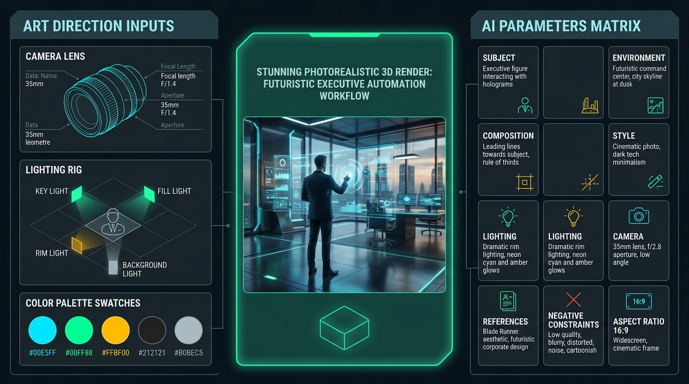
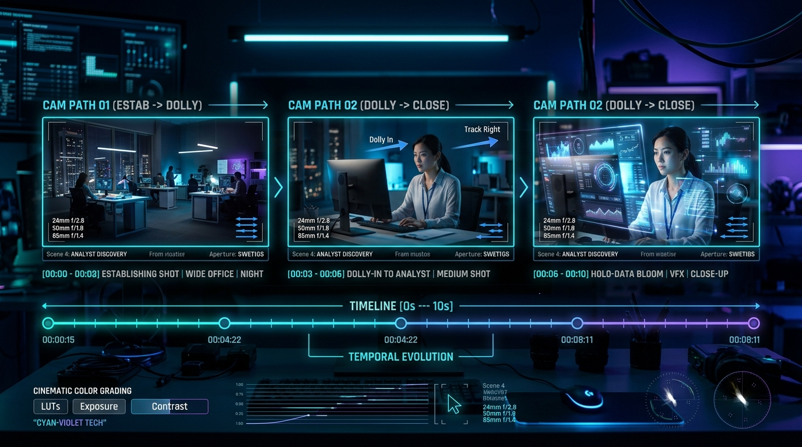
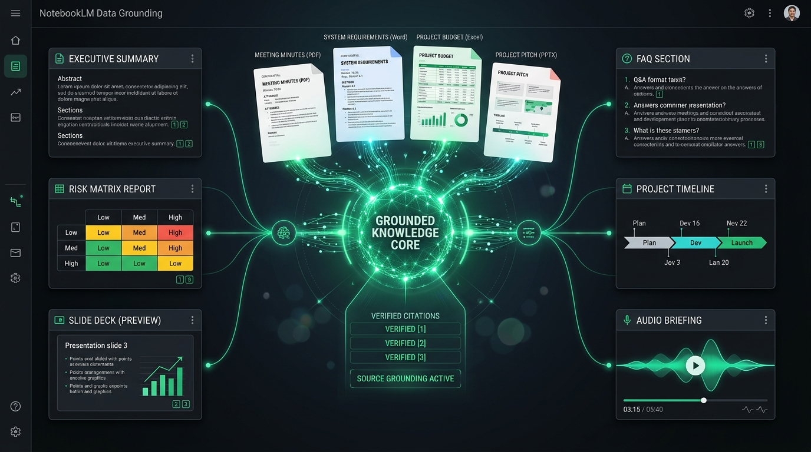
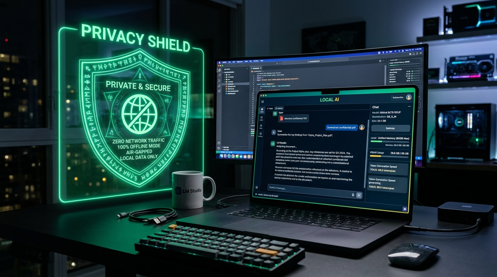
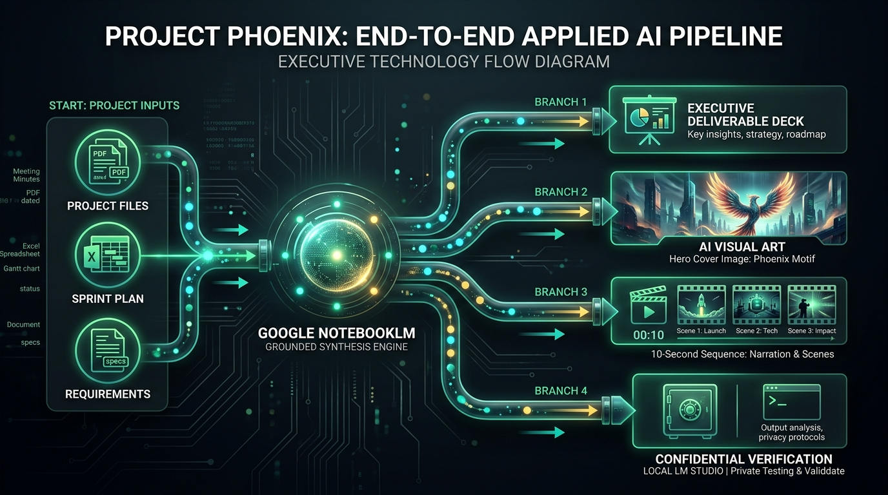

Guía de Estudio: Conceptos Clave & Repaso Práctico (Módulo 2)
Material de trabajo autónomo para el estudiante. Domina los fundamentos aplicados del Módulo 2: especificación de contexto de trabajo, dirección de arte visual y cinemática, grounding fáctico estricto en fuentes reales con NotebookLM y ejecución de modelos locales soberanos con LM Studio.

🧭 Cómo sacar el máximo provecho a este material interactivo
Esta guía no contiene respuestas triviales prefabricadas. Contiene conceptos nucleares, laboratorios interactivos, simuladores en vivo y misiones de auditoría. Utilízala en tu PC o en tu celular como tu libreta de operaciones. Cada sección guarda tu avance automáticamente en tu navegador.
La Regla Cero: Gobernanza y Clasificación de Datos
"Datos reales de trabajo NO significa datos confidenciales."
Antes de subir cualquier archivo a una IA en la nube, es mandatorio aplicar un filtro ético y legal estricto. La falta de gobernanza destruye proyectos de IA corporativos antes de iniciar. Clasifica siempre tus insumos en tres niveles:
Rojo: Prohibido en Nube
Secretos industriales, PII (identificaciones, sueldos, historiales médicos), llaves criptográficas y contraseñas.
- ⛔ Base de clientes con correos y tarjetas
- ⛔ Código fuente con credenciales .env
- ⛔ Patentes en trámite sin registrar
Amarillo: Sensible Interno
Procedimientos operativos internos, borradores de estrategia y memorandos técnicos sin PII.
- 🔒 Permitido en LM Studio (100% desconectado)
- 🔒 O en nube previo proceso de anonimización rigurosa
Verde: Aprobado para Taller
Información pública de la industria, datos sintéticos o el paquete oficial del Proyecto Phoenix.
- ✅ Minutas con nombres ficticios
- ✅ Especificaciones de arquitectura de prueba
- ✅ Datos libres de derechos y de dominio público
Cargando escenario...
Del Prompt al Contexto: Context Engineering
Dejar de pedir favores a la IA y comenzar a especificar trabajo.
El prompting novato escribe frases informales esperando que la máquina adivine el contexto implícito. La Ingeniería de Contexto opera como la redacción de un pliego de requerimientos de software: define metas claras, restricciones negativas, perfiles de audiencia y criterios de aceptación medibles.
Qué problema resuelve el entregable y para qué junta o hito se utilizará.
Cifras exactas, presupuestos, fechas límites y tablas de referencia no negociables.
Estándar de benchmarking: "estilo informe McKinsey o memo de ingeniería Amazon".
Director Financiero (ROI/riesgos) vs. Líder Técnico (latencias/APIs).
Lo que está terminantemente prohibido (--no clichés, no inventar cifras, no preámbulos).
Longitud en cuartillas, tablas comparativas, viñetas ejecutivas y tono neutro.
Uno o dos fragmentos de muestra para calibrar la voz y el estilo deseado.
Preguntas de control que el modelo debe auto-verificar antes de concluir.
⚠️ Por qué falla: El modelo inventa fechas ficticias, utiliza adjetivos grandilocuentes ("es un proyecto revolucionario y maravilloso") y no aporta ningún valor para la toma de decisiones ejecutiva.
Misión 1: Prueba de Fuego del Context Engineering
Copia ambos textos en tu modelo de lenguaje favorito (Claude 3.5 Sonnet, Gemini 1.5 Pro o GPT-4o) y compara los resultados. Analiza cómo la especificación de 8 eslabones elimina la prosa de relleno y fuerza al modelo a razonar sobre los trade-offs de negocio.
"¿Cuáles son las diferencias entre Few-Shot Priming y Zero-Shot en el diseño de prompts complejos?"
Dirección Visual con IA & Matriz de 9 Variables
Dejar de invocar milagros y dirigir como director de arte y fotografía.

Los generadores modernos como Midjourney v6, Flux.1 y Google Imagen 3 entienden principios de fotografía real. Las palabras como "hyperrealistic 8k ultra detail" están obsoletas y contaminan el modelo. La excelencia visual se logra mediante la **Matriz de 9 Variables** y el bucle iterativo:
Idea ➡ Generación ➡ Crítica Técnica ➡ Corrección ➡ Variante ➡ Selección
🎛️ Generador Interactivo de Portada: Proyecto Phoenix
Configura las variables técnicas para producir el prompt cinematográfico definitivo en 16:9.
Calculando prompt...
Misión 2: El Bucle de Corrección en Generación Visual
Genera una primera imagen con tu prompt. Luego aplica una crítica técnica: ¿las manos tienen 5 dedos?, ¿el texto en la pantalla parece una mezcla alienígena?, ¿la iluminación es consistente? En lugar de volver a escribir un prompt desde cero, utiliza la técnica de Vary (Region) / Inpainting para corregir únicamente el defecto visual detectado.
Generación de Video: Estado vs. Evolución Temporal
Una imagen es un estado estático congelado; un video es una función de evolución en el tiempo.

Los modelos de video (Runway Gen-3, Luma Dream Machine, Kling, Sora) no procesan imágenes aisladas: calculan vectores de movimiento y conservación de coherencia anatómica y lumínica. La fórmula maestra para controlar un clip es:
Escena + Sujeto + Acción Específica + Movimiento de Cámara + Velocidad + Duración + Continuidad
Misión 3: De Imagen Estática a Video (Image-to-Video)
Investiga por qué el método Image-to-Video (I2V) es infinitamente superior a Text-to-Video (T2V) en proyectos profesionales. ¿Cómo garantiza el uso de una imagen de partida (Keyframe) que los personajes, las marcas y la estética permanezcan coherentes entre tomas?
NotebookLM como Espacio de Conocimiento (Grounding)
Eliminando el pánico a las alucinaciones: razonamiento fundamentado exclusivamente en tus fuentes.

Mientras que un chatbot ordinario busca responder siempre basándose en probabilidades estadísticas de todo internet, NotebookLM crea un espacio de conocimiento privado donde el modelo se "ancla" (Grounding) únicamente a los documentos que tú subes. Si la información no está en los archivos, el sistema lo indica explícitamente.
Misión 4: Detectar Inconsistencias Humanas con IA
En organizaciones reales, los líderes comerciales firman compromisos sin consultar las hojas de cálculo del equipo de ingeniería. Sube dos documentos deliberadamente contradictorios a NotebookLM y formula esta pregunta exacta:
"Compara los plazos expresados en el documento A frente a las fechas de los sprints del documento B. ¿Existe algún desfase temporal? Cita los números de página exactos."
De Información a Entregables Multiformato
Mismas fuentes documentales, 5 entregables estratégicos de alto impacto.
Un único paquete de fuentes (como el del Proyecto Phoenix) no sirve solo para hacer resúmenes: es un activo líquido del que se derivan memos directivos, matrices técnicas, FAQs operativas y síntesis conversacionales de audio.
Inferencia Local Soberana con LM Studio
Ejecutar modelos en tu propia memoria RAM: 100% desconectado, privado y soberano.

La IA en la nube y la IA local son arquitecturas complementarias. Adoptar modelos locales soberanos ofrece cuatro ventajas insustituibles:
- Privacidad Absoluta (Air-Gapped): Ningún token viaja por internet; cumple las normativas de seguridad más severas.
- Operación Offline: Inferencia garantizada en aviones, plantas remotas o caídas de conectividad.
- Costo Marginal $0: Una vez descargado el modelo, puedes realizar millones de consultas sin facturas de API.
- Independencia de Proveedor: Ningún cambio de términos y condiciones de terceros puede apagar tu servicio.
Misión 5: Cuantización GGUF Explicada
Investiga cómo funciona la cuantización Q4_K_M (4-bit). ¿Cómo es posible comprimir un modelo que pesaba 28 GB en coma flotante (FP16) para que quepa en un archivo de 4.5 GB manteniendo más del 98% de su precisión de razonamiento?
Reto Integrado Phoenix & Supervisión Humana
El pipeline de extremo a extremo y la rúbrica de control de calidad post-generación.

Ningún contenido generado por IA debe enviarse a un cliente o a un comité sin pasar por la **Rúbrica de los 5 Filtros Críticos**. Como profesional responsable, tu función principal es ser el árbitro final de verdad y estrategia:
Glosario Técnico de Producción
Toca o haz clic sobre cada tarjeta para girarla y explorar el concepto.
Context Engineering
Toca para voltearMetodología estructurada de especificación técnica de requerimientos, insumos y restricciones que reemplaza el prompting conversacional novato.
Grounding Factual
Toca para voltearTécnica de anclaje que obliga al modelo a generar respuestas basadas exclusivamente en un conjunto delimitado de fuentes auditables mediante citas.
Cuantización GGUF
Toca para voltearFormato de compresión numérica (Q4_K_M a 4 bits) que reduce drásticamente el peso y requerimiento de RAM para ejecutar LLMs en computadoras normales.
Inferencia Air-Gapped
Toca para voltearEjecución de modelos de inteligencia artificial en entornos totalmente aislados de cualquier red física o internet, garantizando privacidad absoluta.
Keyframe & Trayectoria
Toca para voltearUso de una imagen inicial de referencia para condicionar la geometría y continuidad de una toma de video generada con IA a lo largo del tiempo.
Few-Shot Priming
Toca para voltearInclusión de ejemplos concretos de pares entrada-salida dentro del prompt para guiar el tono, la sintaxis y el formato de la respuesta sin reentrenar.
Autoevaluación Práctica
Pon a prueba tu criterio técnico con casos reales de toma de decisiones.
1. Un analista desea procesar un archivo confidencial con contraseñas de producción y salarios. ¿Cuál es el protocolo estricto según la Regla Cero?
2. ¿Por qué una especificación de Context Engineering supera al simple prompting novato?
3. En el ejercicio de auditoría con NotebookLM, ¿qué ventaja crítica aporta el anclaje factual (Grounding)?
4. ¿Cuál es la principal ventaja de ejecutar un modelo local GGUF en LM Studio con el Wi-Fi desconectado?
Checklist de Dominio Profesional
Marca únicamente los hitos que estés preparado para ejecutar de forma autónoma.
Recursos y Ecosistema Oficial
Enlaces seleccionados para continuar tu desarrollo profesional.
LM Studio Oficial
Descarga el entorno líder de inferencia local para Mac, Windows y Linux con soporte GGUF y GPU Metal/CUDA.
lmstudio.ai →Google NotebookLM
Espacio de trabajo para investigación basada en grounding estricto con Gemini 1.5 Pro y citas auditables.
notebooklm.google.com →Modelos GGUF en Hugging Face
Explora repositorios de cuantización oficial (TheBloke, Bartowski) para Llama-3.2, Qwen2.5 y Mistral.
huggingface.co →Documentación de Midjourney v6
Parámetros oficiales de control de aspect ratio (--ar), estilización (--s), variedad y edición por regiones.
docs.midjourney.com →